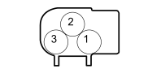

K097H PARKING SENSOR UNIT (PARKING SENSOR BRAID)
- Path
- Electrical equipment > 3 CONNECTORS > K SENSORS AND SENDER UNITS > K097 PARKING SENSOR UNIT > K097H PARKING SENSOR UNIT (PARKING SENSOR BRAID)
- Kind
- connector pinout (pin -> wire colour -> other end)
- Applies to
- engines: 1.4 8v, 1.6 16v, 1.3 JTD 16V, 1.9 JTD 8V; production: da 12/03; only with equipment: MY 2005
- Interactive page
- https://sloeber94.github.io/elrnDB-fDbl/en/#/223005016
Applies to: engines: 1.4 8v, 1.6 16v, 1.3 JTD 16V, 1.9 JTD 8V; production: da 12/03; only with equipment: MY 2005

Wiring | Colour |
|---|---|
_ |
Pin | Cable | Destination | |||
|---|---|---|---|---|---|
Sec.. | Colour | Node | Connect. | Pin | |
1 | 0,35 | LG (blue with yellow stripe) | X | 6 | |
1 | |||||
1 | |||||
1 | |||||
2 | 0,35 | GV (yellow with green stripe) | 4 | ||
3 | 0,35 | MN (brown with black stripe) | X | 1 | |
3 | |||||
3 | |||||
3 | |||||
Topics linked from this page (5)
- 74 PARKING SENSOR BRIDGE
- K097E PARKING SENSOR UNIT (PARKING SENSOR BRAID)
- K097F PARKING SENSOR UNIT (PARKING SENSOR BRAID)
- K097G PARKING SENSOR UNIT (PARKING SENSOR BRAID)
- M084B PARKING SENSOR ECU (PARKING SENSOR BRAID)